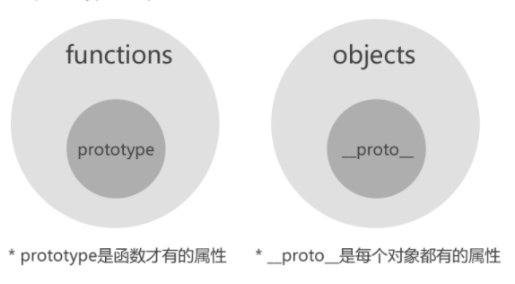
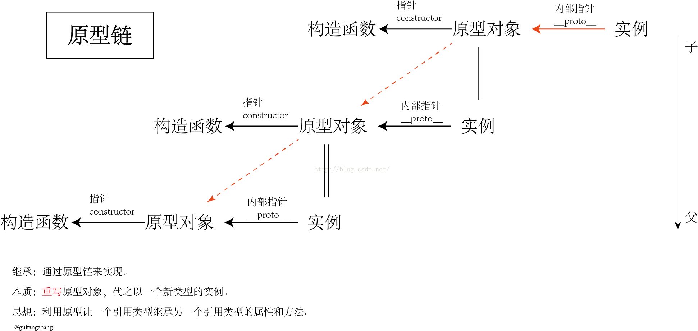

蚂蚁金服前端面试

XiaoBooo
3月16,2018
前端
记人生第一次面试
岗位：前端工程师（实习） 部门：蚂蚁金服 学长内推，所以很快获得了面试机会。 面试提前约好在晚上的7：00电话面试。 首先自我介绍，面试官旁边有很多人在讨论事情，通话质量不怎么好，但面试体验还是很好的。
项目篇（日常三连
介绍一下你的这个前端项目 项目的开发过程中遇到了什么困难 你们是怎么解决这些困难的
基础篇（真的是惊了）
1.谈谈你对html5的认识 HTML5指的是包括HTML、CSS和JavaScript在内的一套技术组合。它希望能够减少网页浏览器对于需要插件的丰富性网络应用服务（RIA） HTML5增强了浏览器的原生功能，符合HTML5规范的浏览器功能将更加强大，减少了Web应用对插件的依赖，让用户体验更好，让开发更加方便.
2.谈谈你对js原型的理解 每创建一个函数都会有一个prototype属性，这个属性是一个指针，指向一个对象（通过该构造函数创建实例对象的原型对象）。原型对象是包含特定类型的所有实例共享的属性和方法。原型对象的好处是，可以让所有实例对象共享它所包含的属性和方法。
原型链:原型链是实现继承的主要方法。 原型链基本思路： 利用原型让一个引用类型继承另一个引用类型的属性和方法。 每个构造函数都有一个原型对象，原型对象都包含一个指向构造函数想指针(constructor)，而实例对象都包含一个指向原型对象的内部指针(__proto__)。如果让原型对象等于另一个类型的实例，此时的原型对象将包含一个指向另一个原型的指针(__proto__)，另一个原型也包含着一个指向另一个构造函数的指针(constructor)。假如另一个原型又是另一个类型的实例……这就构成了实例与原型的链条。
3.CSS有几种使用方式 内联、内部、外部 4.内部使用和外部使用CSS有什么区别 外部样式表： 当样式需要应用于很多页面时，外部样式表将是理想的选择。在使用外部样式表的情况 你可以通过改变一个文件来改变整个站点的外观。 内部样式表： 当单个文档需要特殊的样式时，就应该使用内部样式表。 内部样式只供本页面使用，而外部样式可 以通过链接样式表的方式，可供多个页面使用，而且方便管理。外部样式如果链接到多个页面 ，浏览器只需加载一次，而且页面相同地方出错，只需修改外部样式，且只需修改一次；如果以 内部样式的方式写到多个页面中，那每打开一个页面浏览器就要加载一次，占用流量，页面相 同地方出错，需一个一个页面修改，工作量大，比较烦琐，容易出错。外部样式表里还可以链 接其它外部样式表。 5.你有学过什么前端框架吗 6.AJAX的工作原理

7.你常用的排序算法是哪些，说一下这些排序算法的思想 8.考了一道正则表达式的编程题 9.有用过linux吗 10.linux的一些常用命令 11.用过Git吗，如果利用Git创建一个仓库 12.计算机网络有了解过吗 （没学过所以就没问我相关知识）
日常篇
平时怎么学习的 为什么想来蚂蚁金服 你有什么要问我的吗？
面试总共持续108分钟，聊得口干舌燥，问的问题远不止这些，其他的想不起来了，面试官十分友好，会耐心帮你解答并指导你该怎么学习，虽然这次面试挂了，但很感谢这位面试官，指明了我前端学习的大方向。